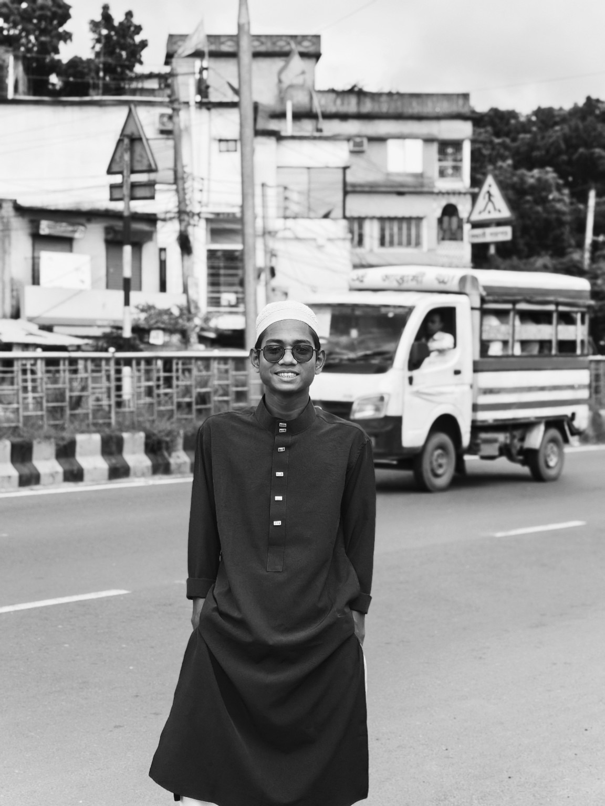

Islamic Writing
Reflections, educational writing and messages rooted in beneficial knowledge.
I’m Jubayer Ahmad Juju — a writer and creative content maker interested in Islamic writing, meaningful ideas and visual storytelling.
Discover my story ↗Jubayer Ahmad Juju is a Bangladesh-based writer, content creator and graphic design enthusiast. His interests include Islamic writing, educational content, thoughtful communication and motivational ideas.
Through Jubayer's Journal, he aims to share reflections, useful knowledge and creative work that encourage learning, good character and positive action.
Reflections, educational writing and messages rooted in beneficial knowledge.
Creating thoughtful digital content, stories and ideas for online audiences.
Visual communication, layouts and creative design projects.
“Let knowledge shape your thoughts, and let good actions give them meaning.”
A thought from Jubayer's Journal


Articles and essays will appear here. Start with your own original writing, add a clear title and date, and link each article from this section.